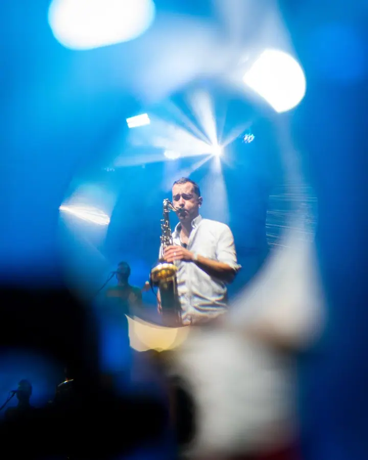
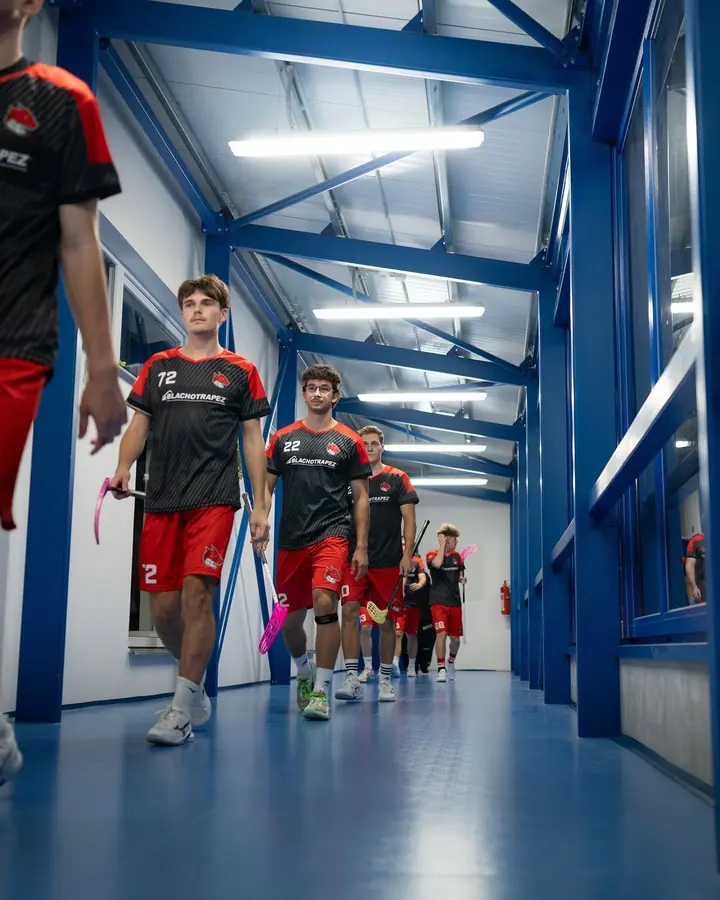
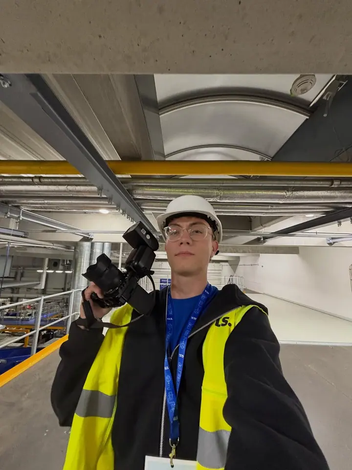
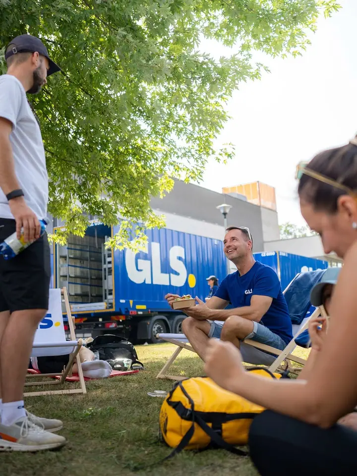
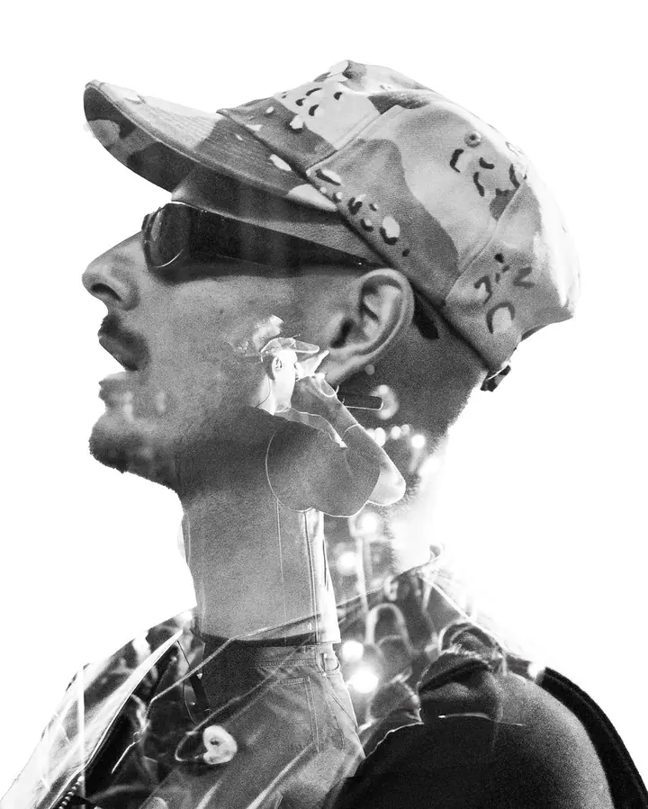
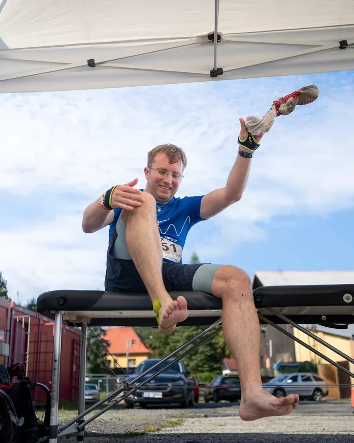

01 / 04
Sportovní focení
Fotím dynamiku a rozhodující momenty zápasů i závodů. Zajímá mě hra, ale i to, co se děje v šatně, na chodbě nebo po doběhu.
Zeptat se na termín→





Sport, koncerty a auta v pohybu
Zeptat se na termín →(01) Ahoj
Jmenuji se Tadeáš Siwek a nejvíc mě baví zachycovat energii sportu , atmosféru koncertů a detail automobilů. Fotografii se věnuji přes rok, mým výchozím bodem je Havlíčkův Brod a rád fotím i portréty a street.
84příspěvků s fotkami a příběhy
(02) Co fotím
01 / 04
Fotím dynamiku a rozhodující momenty zápasů i závodů. Zajímá mě hra, ale i to, co se děje v šatně, na chodbě nebo po doběhu.
Zeptat se na termín→02 / 04
Fotím energii a atmosféru pódia, ale také akce, produkci a lidi kolem nich. Hodí se pro festivaly, koncerty i firemní akce.
Zeptat se na termín→03 / 04
Detail, linie a charakter aut. Každé focení připravím podle toho, co má fotka o autě říct.
Zeptat se na termín→Dále nabízím
Lidé, výrazy a příběhy. Rád fotím autentické momenty z ulic i z přírody a zkouším při tom kreativní nápady.
↗(04) Postup
Od první zprávy po hotovou galerii.
Krok 1 z 4
Napište mi e-mail nebo zavolejte a popište, o jakou akci, zápas nebo projekt jde.
Krok 2 z 4
Cenu stanovím vždy podle rozsahu a typu focení. Projdeme spolu, co přesně potřebujete.
Krok 3 z 4
Na místě se soustředím na atmosféru, emoce a rozhodující momenty, aby fotky měly dynamiku.
Krok 4 z 4
Fotky vyberu, upravím do jednotného stylu a pošlu vám je v dohodnutém termínu.
Každá fotka má mít vlastní příběh
(05) Za objektivem
Fotografii se věnuji přes rok. Nejvíc mě baví energie sportu, atmosféra koncertů, detail automobilů a autentické momenty z ulic nebo z přírody.
Každé focení beru individuálně. Snažím se, aby fotky měly emoci, dynamiku a vlastní charakter, ať jde o rozhodující moment zápasu, světla nad pódiem, nebo linie auta.
I když se zaměřuji hlavně na sport, auta, koncerty a street, rád fotím i jiné projekty. Pořád hledám nové výzvy a kreativní možnosti, takže když máte nápad, napište mi.
Tadeáš
Tadeáš Siwek · Fotograf sportu, koncertů a eventů
Cena je vždy podle rozsahu a typu focení. Eventy, koncerty, sport, auta i portréty počítám na vyžádání, stačí mi napsat.
Jsem z Havlíčkova Brodu. Pokud je akce jinde, domluvíme se.
Na ně se zaměřuji nejvíc, ale rád fotím i jiné projekty. Nové výzvy a kreativní nápady mě baví.
Napište mi e-mail, zavolejte, nebo se ozvěte přes Instagram @tada.photos.
(07) Kontakt
Napište pár vět o tom, co si představujete, a termín, který se vám hodí.
tadeas.siwek@gmail.com